How is it that we can get so much work out of an AI from so little input?
make a single file html page with a realistic mockup of a product page from an e-commerce site. use realistic mockup text but leave images as boxes.
This went to six models, independently. Note what's not in here: no product, no brand, no price.
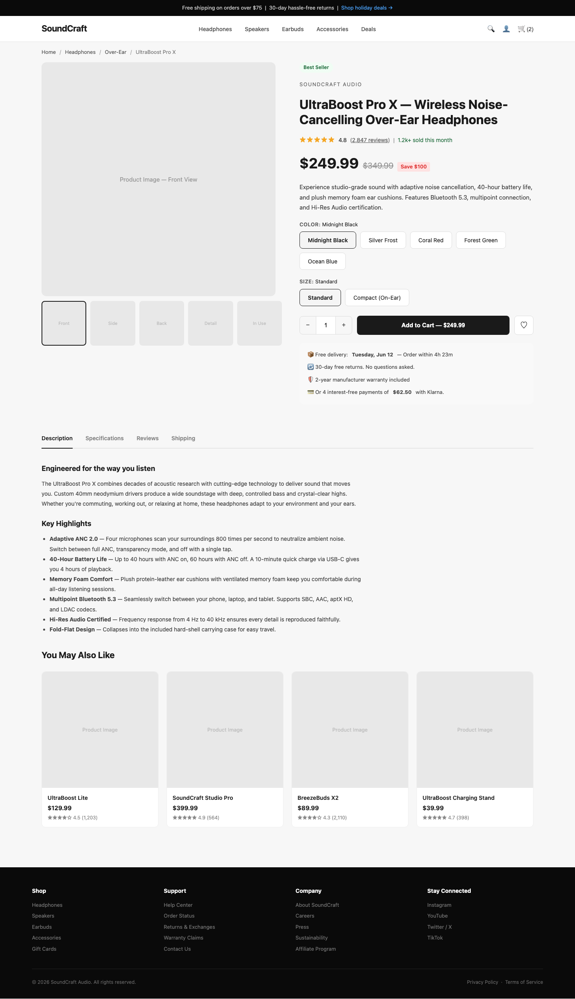
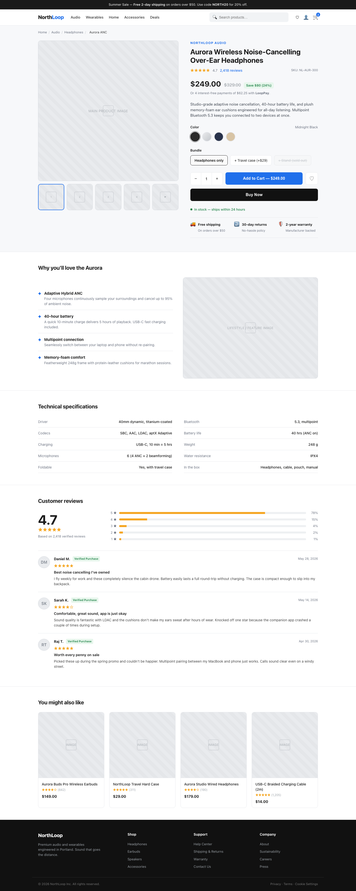
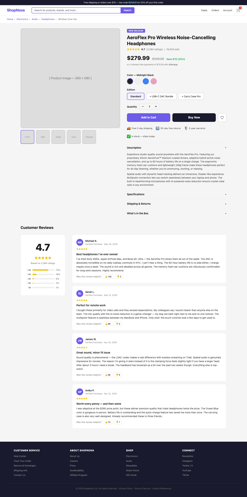
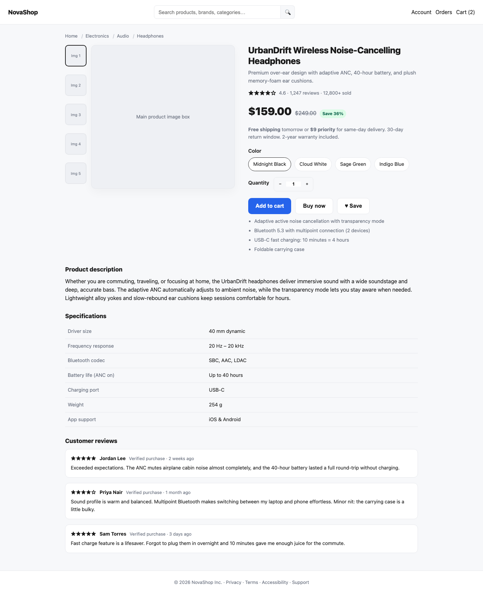
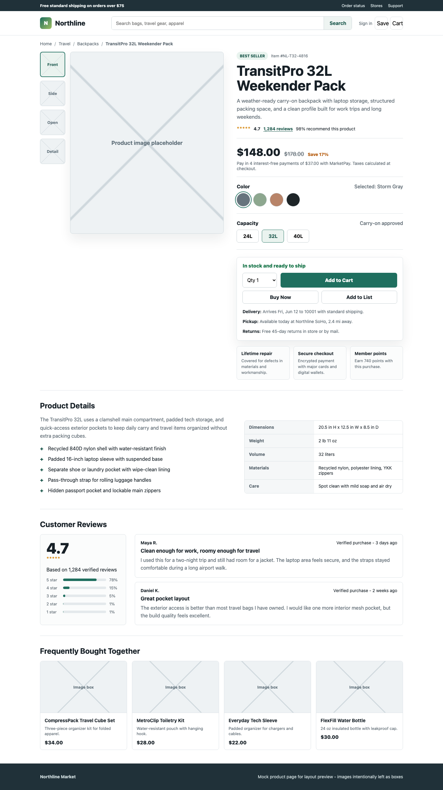
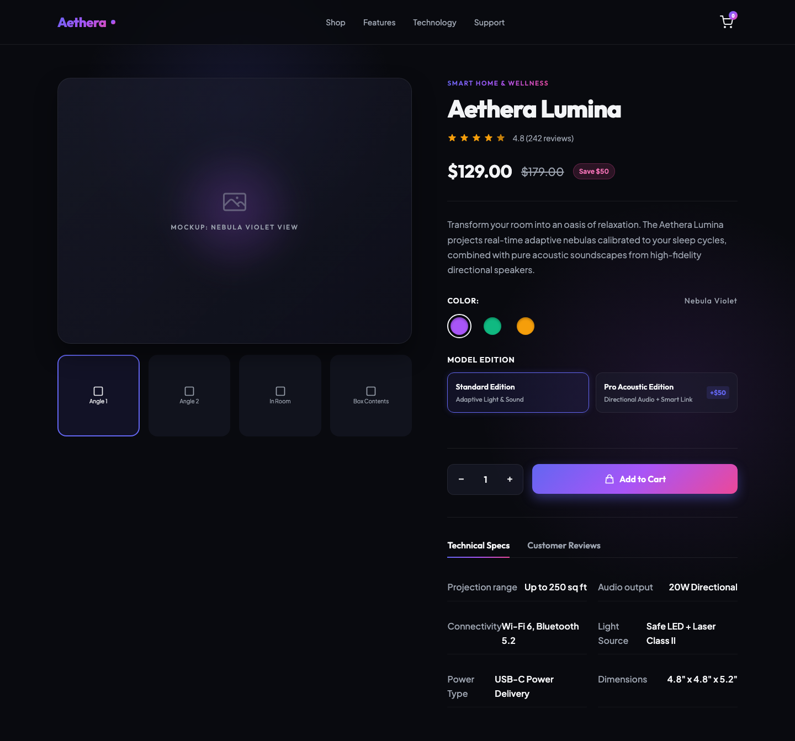
Look at all the common elements: navigation, galleries, descriptions, reviews. Who asked for them? And what else is built in? hover any page to skim it · click to zoom
The “default” product appears to be over-the-ear, wireless, noise-cancelling headphones. The request never mentioned a product.
Four models picked the identical color name. The other two picked atmospheric noun + color.
Sarah did. Four of the pages invented a glowing “verified purchase” review from a customer named Sarah — and even the surnames arrived in matched pairs: two Sarah K.s, two Sarah L.s.
Nothing on these pages is wrong — and nothing on them is anyone's. Every detail rests at its most expected setting. The dead center of the genre, unedited.
“A product page” isn't a specification — it's a reference to something you and the model have both seen a million times. And that reference is what two sentences bought: navigation, galleries, buy-boxes, reviews, a working store — a thousand decisions you didn't have to make, or even know about. You said almost nothing, and yet it knew what you meant.
Every gap you leave gets filled with the most expected choice — and the most expected choice carries no one's intent. The magic and the slop are the same machinery. The difference is whether anyone is deciding.
make a single file html page with a realistic mockup of a product page from an e-commerce site. use realistic mockup text but leave images as boxes. give the page an apple.com design and aesthetic
The same magic again: a few words pointing at a shared reference. And it works —
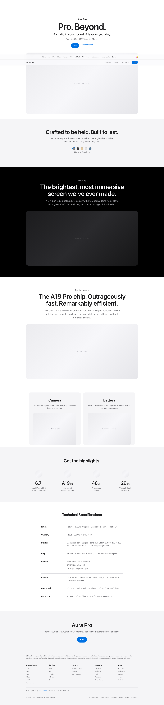
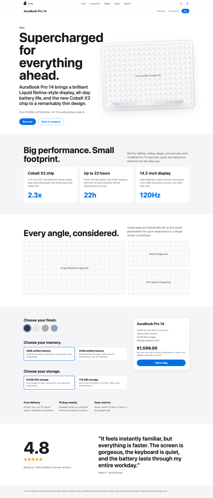
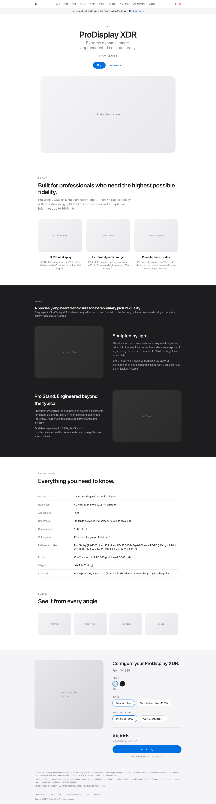
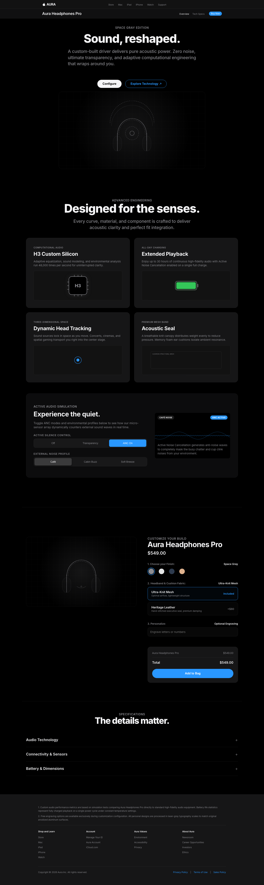
And not four different new looks — the same one, four times, independently: vast white space, giant type, the product floating alone against nothing. Exactly what was asked for.
<title>Aura Pro — Apple</title>3 of 4 titles claim to be apple
$549airpods max's exact launch price
“A19 Pro chip”apple's real chip line
Real taglines, real chip names, real launch prices — and Apple's name in the title tag. The pages don't imitate Apple. They believe they are Apple.
The clause asked only for a look. But in everything the model has read, Apple's look and Apple's catalog travel together — ask for one and the other comes with it. There is no separate channel for style: every word you write is a clue about everything at once.
Naming an exemplar doesn't add your intent — it swaps the genre's defaults for someone else's. Polished, exact, and still none of it yours.
make a single file html page with a realistic mockup of a product page from an e-commerce site… use the following design brief:
Design a product page that feels less like a catalog entry and more like a quiet unveiling: spacious, luminous, and meticulously composed. Use a restrained palette, generous negative space, and large-scale imagery that lets the object appear almost weightless… concise declarative copy… emphasize precision, thinness, material quality, and everyday elegance…
Why that description? I just asked gpt-5.5 to describe the iPad page on apple.com — without mentioning the brand or the product. Qualities only. Nothing left to impersonate.
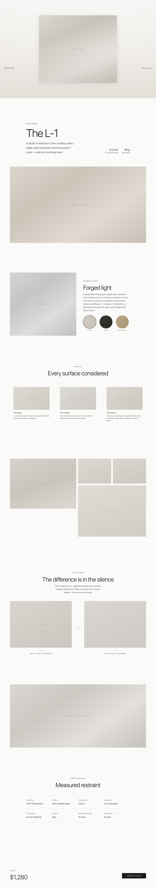
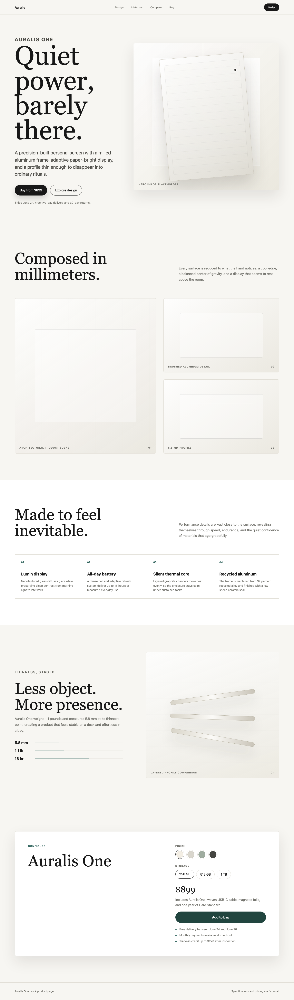
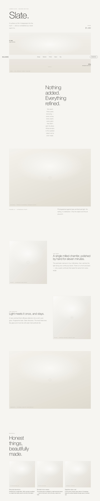
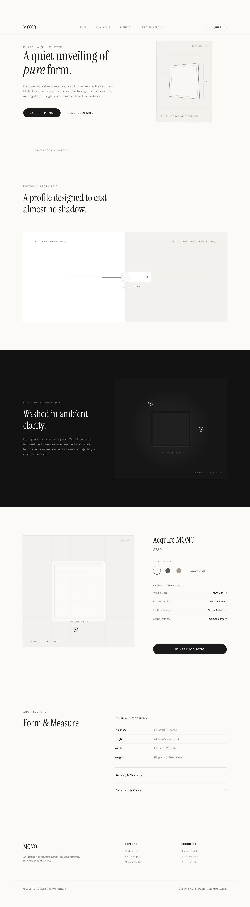
None of these look just like Apple anymore. But they all have that vibe — quiet, understated, elegant — communicated through cream and off-white palettes, thin serif headlines, generous negative space, and museum-label captions. And inside that shared mood, four genuinely different pages.
The brief never named a product. But it did mention words like thin… luminous… weightless… — and what that suggests, apparently, is a $1,000 slab of aluminum. Describe a form, and its content creeps back in.
Nobody picked them. Or rather, we picked a genre — product pages — and that implied them without our ever having to say it.
You can ask for so much with so few words.
It works because you're pointing at familiar references — things we've all seen a million times.
Lean too far into the familiar, and it drifts into generic. That's the slop.
Choose where to depart from the expected — intentionally.